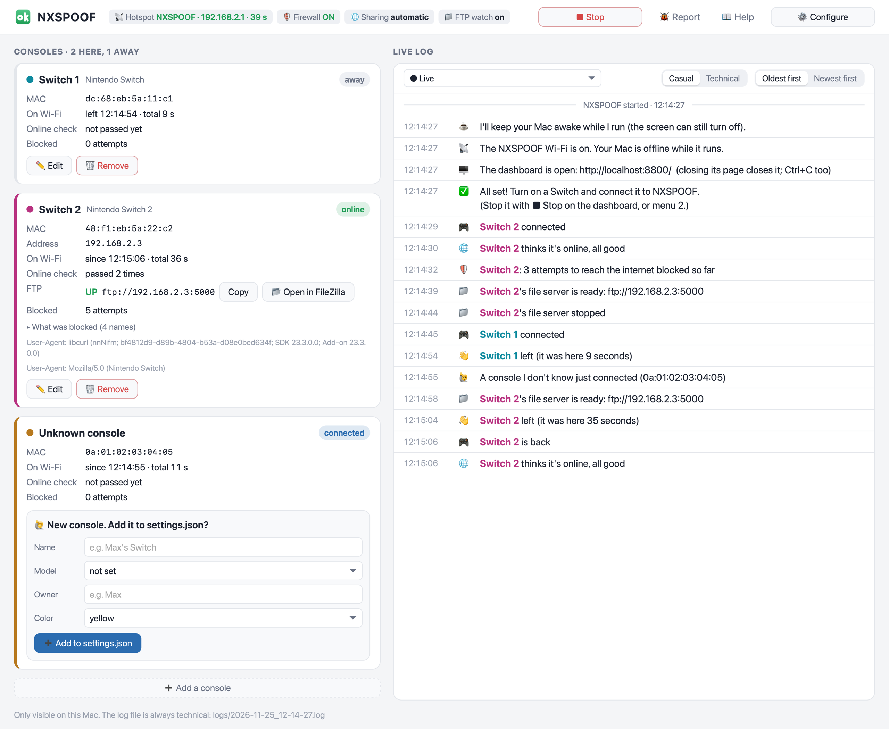

NXSPOOF
Your Mac becomes a Wi-Fi hotspot for Nintendo Switch and Switch 2 consoles that answers only their "am I online?" connection test, and blocks everything else. Your consoles think they're online and keep working with things that need a network (an FTP app on the console, for example), while nothing reaches Nintendo or the internet.

Two ways in
NXSPOOF.app: the dashboard
Double-click it: a page opens in your browser. ▶ Start (your Mac password in macOS's own window), your consoles as they join, the live log in plain words, ⚙️ Configure, past runs, ■ Stop. Closing the page never stops NXSPOOF by accident: it asks first.
menu.command and nx_spoof.py
Everything by number, or every command and --flag by hand. The same start, the same program and the same data folder as the app: the two doors open onto one NXSPOOF.
What you see
🎮 Switch 2 connected 🌐 Switch 2 thinks it's online, all good 🛡️ Switch 2: 4 attempts to reach the internet blocked so far 📁 Switch 2's file server is ready: ftp://192.168.2.3:5000 👋 Switch 2 left (it was here 3 min 42 s)
The casual log. The technical one has every DNS question, web request and firewall count; every run is saved with both.
The pages
Use it
Understand it
Look it up
Build it
About these pages
They're the docs/ folder of NXSPOOF, plain HTML that works offline: the dashboard shows them under 📖 Help, the menu's Docs (9) opens them in your browser, and the public site is the same folder. Every table that mirrors the code (settings, options, commands, the menu, the modules) is written from the code itself by tools/docs.py, so it can't fall behind.